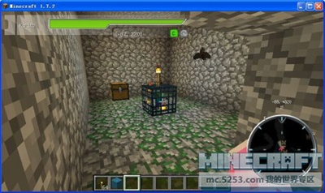
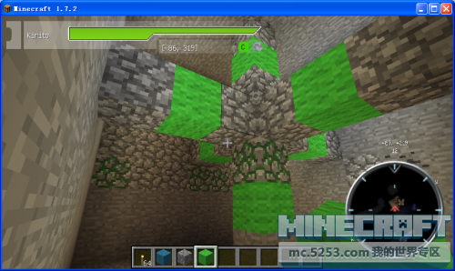
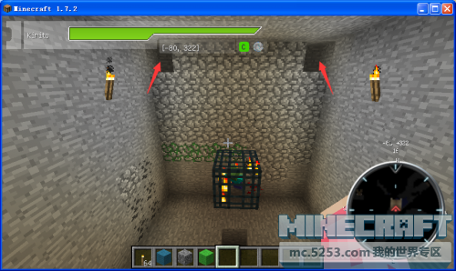
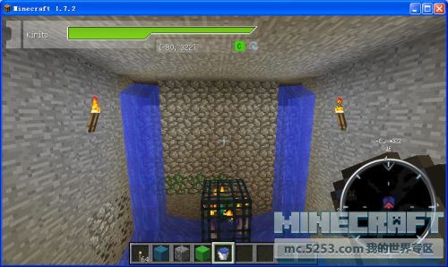
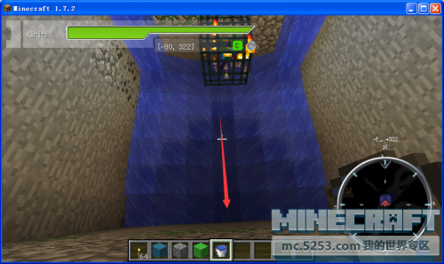
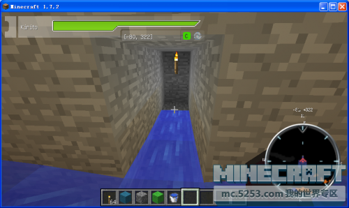
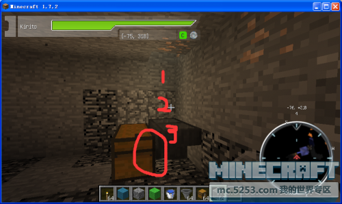
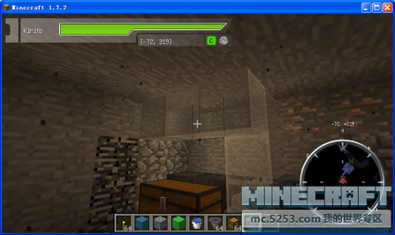
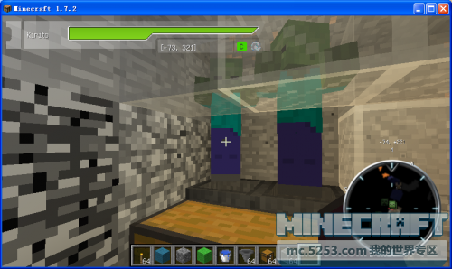

刷怪笼简易改造
首先自我介绍一下我是天凌，欢迎大神和新人来观看，知道的大神不要吐槽哦，废话不多说切入正题。
首先当然是找到刷怪笼。

然后以刷怪笼为中心。向6个方向扩3个方块。也就是7×7×7

然后在刷怪笼的下面挖个想这个的图形。至于有什么用我一会再说
然后在左上角和右上角挖掉。（注意：要在所挖的图形对面的墙）

然后在左上角和右上角放水。

至于这个图形的用途就是将怪物集中在一个方向。

然后在这个方向挖4格。然后在第四个（也就是水流不到的地方）往下挖，至于多少格自己定。

然后在末端挖3格。放两个漏斗和箱子。（注意要将漏斗和箱子连在一起。）

然后在周围放方块（建议玻璃）使僵尸看不见我们。

然后僵尸会一个一个掉下来
而掉下来的东西就会掉进漏斗再运输到箱子。
最适合在服务器让别人来刷经验然后自己去拿僵尸掉下来的腐肉，僵尸头啥的。

对了。忘了说了。至于那封印在刷怪笼上的火把就自己想办法打掉吧=v=